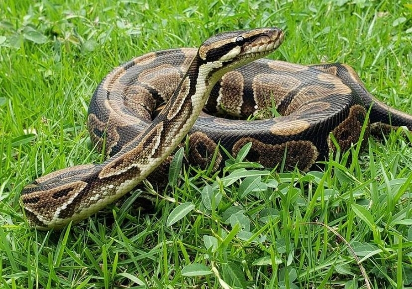
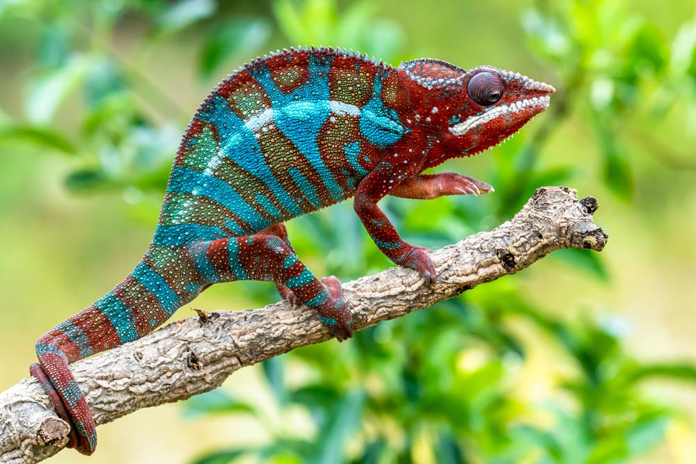
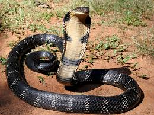

Los reptiles son animales vertebrados que se caracterizan por desplazarse reptando. Es decir, arrastrándose por el
suelo, como la serpiente, el cocodrilo, el lagarto o la tortuga. Ello es debido a que originalmente vivían en medios
acuáticos. La evolución los ha llevado a adaptarse totalmente a la vida terrestre. Aun así, habitualmente habitan en
zonas con presencia de agua como pantanos, lagos u orillas de ríos.
Serpiente Pitón 🐍

La pitón es una serpiente constrictora que se encuentra en África, Asia y Australia.
No es venenosa, pero mata a sus presas por asfixia. Vive en selvas y zonas húmedas.
- Puede superar los 6 metros de longitud.
- Traga la presa entera sin masticar.
- Pasa semanas sin comer tras una gran caza.
Un reptil impresionante pero vulnerable
La caza por su piel y su venta como mascota han reducido sus poblaciones. Necesita protección frente al comercio ilegal.
Iguana Verde 🦎
La iguana verde es un reptil herbívoro común en América Central y del Sur. Vive en árboles y es muy ágil.
- Alcanza hasta 2 metros con la cola.
- Se alimenta de hojas, flores y frutas.
- Cambia de color ligeramente según su ánimo.
Una especie común que necesita cuidados
Aunque no está amenazada, su tenencia como mascota sin control y la deforestación reducen sus números silvestres.
Camaleón 🌈

El camaleón es famoso por su capacidad de cambiar de color y su lengua larga para capturar presas.
- Cambia de color por emociones, luz o temperatura.
- Lengua pegajosa que atrapa insectos a gran velocidad.
- Ojos que se mueven de forma independiente.
Un reptil único en el mundo
Muchas especies están en peligro por la pérdida de hábitat y la caza para el comercio de mascotas.
Cobra 🐍

La cobra es una serpiente venenosa famosa por su capucha al sentirse amenazada. Habita Asia y África.
- Algunas especies escupen veneno como defensa.
- Dieta: roedores, aves y reptiles.
- El "baile" es una postura defensiva, no ataque real.
Temida pero fascinante
Varias especies están protegidas. El respeto y la educación son esenciales para evitar su matanza innecesaria.
Dragón de Komodo 🐉
El lagarto más grande del mundo. Vive en islas de Indonesia. Su mordida es venenosa y mortal.
- Pesa hasta 70 kg y mide más de 3 m.
- Caza desde aves hasta ciervos.
- Corre a 20 km/h en distancias cortas.
Una especie en peligro
Catalogado como vulnerable. Amenazado por la caza, la pérdida de hábitat y el turismo descontrolado.